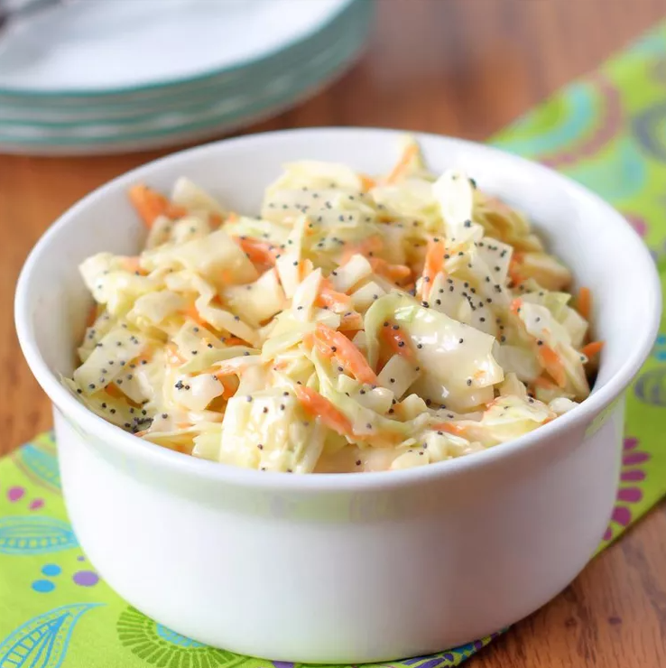

This sweet coleslaw recipe tastes like the slaw served at popular fried chicken or fish restaurants.
It's excellent with burgers or on top of BBQ pork sandwiches, too!
Whisk salad dressing, sugar, vegetable oil, vinegar, poppy seeds, and salt together in a medium bowl until blended.
Pour dressing over coleslaw mixture and toss to coat.